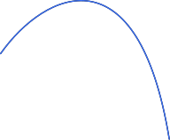

Write your name & answers on a sheet of paper.
You will be turning these in.
What can you say about the slopes of parallel lines? What about perpendicular?
Parallel lines have the same slope. Perpendicular lines have reciprocal & negated slopes.
What is a linear expression/equation?
Of degree one, AKA the highest exponent is 1.
an equation is linear if it is degree 1
Linear means we are working with lines.
\(y=mx+b\)
The equation can be shuffled however you want:
\( ay \pm cx = b\) ✓
\( b = ay \pm cx\) ✓
\( cx \pm b = ay\) ✓
\(c( x \pm b) = a(y - d)\) ✓
All that matters is \(x\) and \(y\) have no exponent \(>1\).
...straight lines
\(x\)
\(y\)
\(y=8x+5\)
Yes
\(x-y=1\)
Yes
\(2x+3y=17\)
Yes
\(x^2=y\)
No
\(x=9y\)
Yes
\(x\)
\(y\)

There are a lot of times in life where we need to meet multiple requirements, so we use systems of equations.
a system is a collection of equations that must all be true simultaneously
a system is a collection of equations that must all be true simultaneously
When verifying a solution, we check that it works in all equations. (That means, if it fails for one, you don't have to check the rest!)
\(x=5, y=6\)
no, fails 1st eq
\(x=-7, y=-8\)
no, fails 2nd eq
\(x=4, y=3\)
valid!
Isolate one variable: solve one equation for one variable.
Substitute: replace the variable you isolated in the other equation.
Back-substitute: plug the (2) answer into the (1) answer to find the other variable.
Check your solution in BOTH eqs!
\(\begin{cases} x-y=1 \\ 2x+3y=17 \end{cases}\)
\(x-y=1 \)
\(x = y + 1\)
\(2\) \(x\) \( + 3y = 17\)
\( 2(\) \(y+1\)\()+3y=17\)
\( \vdots \\\) \( y = 3\)
\(x = y + 1\)
\(x=3+1=\) \(4\)
Isolate one variable: solve one equation for one variable.
Substitute: replace the variable you isolated in the other equation.
Back-substitute: plug the (2) answer into the (1) answer to find the other variable.
Check your solution in BOTH eqs!
Pick a variable to eliminate and scale the eq appropriately.
Add the eqs to cancel out one variable, and solve for the remaining variable.
Back-substitute your (2) solution into one of the original eqs.
Check your solution in BOTH eqs!
\(\begin{cases} x-y=1 \\ 2x+3y=17 \end{cases}\)
\(3\cdot (x-y=1) \\ 3x -3y = 3\)
\( \begin{array}{cccc} &3x -3y = 3 \\ + &2x + 3y = 17 \\ \hline &5x = 20\end{array}\)
\(x = 4 \)
\(x-y=1 \)
\(4-y=1\)
\(y=3 \)
Pick a variable to eliminate and scale the eq appropriately.
Add the eqs to cancel out one variable, and solve for the remaining variable.
Back-substitute your (2) solution into one of the original eqs.
Check your solution in BOTH eqs!
Is \(x-y=1\) a line?
Is \(x-y=1\) a line?
Is \(2x+3y=17\) a line?
Is \(x-y=1\) a line?
Is \(2x+3y=17\) a line?
A linear system is a system of lines.
On the graph, what could the solution be?
\(x\)
\(y\)
\((4,3)\)
exactly 1 solution:
different slope
no solutions:
same slope, different intercepts
infinite solutions:
same slope, same intercepts
(same line!)
exactly 1 solution:
get specific \(x\) and \(y\)
no solutions:
variables cancel out and result is FALSE
infinite solutions:
variables cancel out and result is TRUE
exactly one = get an \(x\) and a \(y\)
no solutions = variables cancel and FALSE equation is left
infinite solutions = variables cancel and TRUE equation is left
Some common mistakes:
using graphs as your end-all-be-all
accidentally getting infinite solutions via substitution: substituting in step (2) back into the same eq we started with; make sure you substitute into the other equation
Ex. 2
\(x-y=1\)
\(x=y+1\)
\(x\)\(-y=1\)
\((y+1)\)\(-y=1\)
\(1=1\)
Infinite solutions? NO! Plug into the other equation!!
Some common mistakes:
using graphs as your end-all-be-all
accidentally getting infinite solutions via substitution: substituting in step (2) back into the same eq we started with; make sure you substitute into the other equation
if you’re trying to check your work and it’s not working, it’s probably arithmetic mistakes: either while trying to solve, or while plugging in to check
-> 1.3 homework
-> buy workbook!!!! (if you haven't yet)